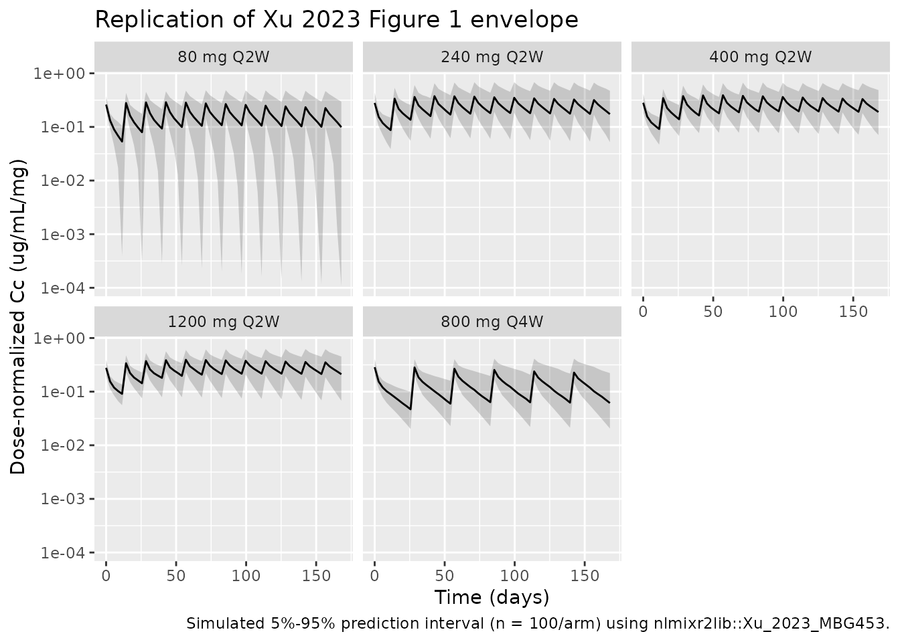
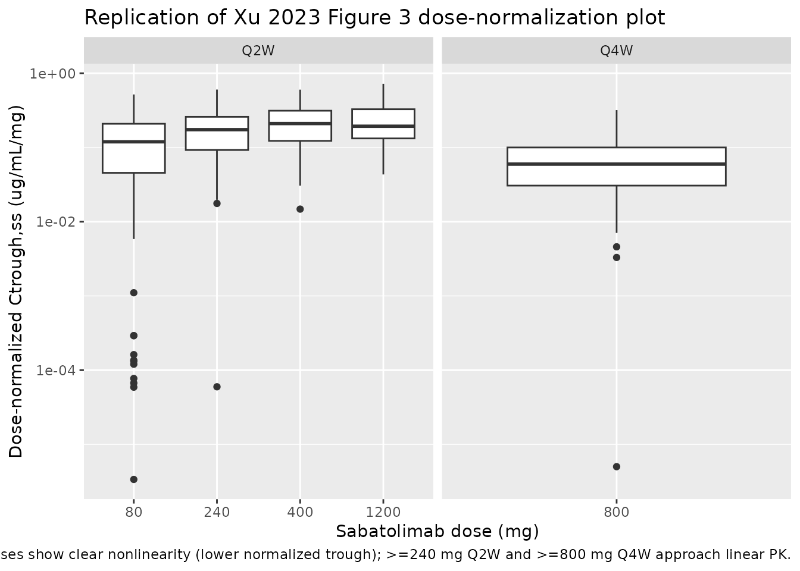

Model and source
- Citation: Xu S, Zhang N, Rinne ML, Sun H, Stein AM. Sabatolimab (MBG453) model-informed drug development for dose selection in patients with myelodysplastic syndrome/acute myeloid leukemia and solid tumors. CPT Pharmacometrics Syst Pharmacol. 2023;12(11):1653-1665. doi:10.1002/psp4.12962
- Description: Two-compartment population PK model for sabatolimab (MBG453, anti-TIM-3 IgG4) with parallel linear and Michaelis-Menten elimination from the central compartment, fit to pooled adult patients with advanced solid tumors and hematologic malignancies (Xu 2023).
- Article: https://doi.org/10.1002/psp4.12962
- Supplement (figures, tables, Monolix appendices): published alongside the article in CPT:PSP 2023;12(11) supporting information.
Population
The Xu 2023 PopPK analysis pooled 444 adults from two phase I / Ib trials of sabatolimab (MBG453), an anti-TIM-3 IgG4 antibody: 252 patients with advanced or metastatic solid tumors (NCT02608268) and 192 patients with hematologic malignancies (NCT03066648) – AML, MDS (including intermediate-, high-, and very high-risk per Revised IPSS), or CMML, all ineligible for intensive chemotherapy. Eligibility required age >= 18 years and ECOG performance status 0-2. Sabatolimab was administered as a 30-minute IV infusion at 20-1200 mg Q2W or 80-1200 mg Q4W, alone or in combination with spartalizumab (anti-PD-1, PDR001) and / or hypomethylating agents (decitabine or azacitidine). Treatment-arm composition: 159 sabatolimab monotherapy, 130 sabatolimab + spartalizumab, 55 sabatolimab + azacitidine, and 100 sabatolimab + decitabine +/- spartalizumab.
The hematologic-malignancy cohort was older (median age 71-72.5 years across treatment arms; Table S1) and predominantly Caucasian (68.9-87.9% across arms; the remainder Asian, Black, Other, or Unknown) with ~40% female. The published main paper does not report median baseline weight; the model centers the WT effect on a working reference of 75 kg (see “Assumptions and deviations” below).
The same population metadata is available programmatically via
readModelDb("Xu_2023_MBG453")$population.
Source trace
Every parameter’s origin is recorded in-line in
inst/modeldb/specificDrugs/Xu_2023_MBG453.R. The table
below collects the per-parameter and per-equation provenance for review.
Page numbers refer to the published article.
| Equation / parameter | Value | Source location |
|---|---|---|
lcl (CL, L/day) |
log(0.0103 x 24) | Xu 2023 Table 1, p1660 (CL = 0.0103 L/h) |
lvc (V, L) |
log(3.59) | Xu 2023 Table 1, p1660 (V = 3.59 L) |
lq (Q, L/day) |
log(0.0353 x 24) | Xu 2023 Table 1, p1660 (Q = 0.0353 L/h) |
lvp (V2, L) |
log(2.38) | Xu 2023 Table 1, p1660 (V2 = 2.38 L) |
lvmax (Vm, (ug/mL)/day) |
log(0.0197 x 24) | Xu 2023 Table 1, p1660 (Vm = 0.0197 ug/mL/h) |
lkm (Km, ug/mL, FIXED) |
log(0.074) | Xu 2023 Table 1, p1660 footnote a (Km = 0.5 nM = 0.074 ug/mL FIXED) |
e_wt_cl (allometric WT on CL) |
0.743 | Xu 2023 Table 1 row beta_CL,WT0; Eq. on p1657 |
e_wt_vc (allometric WT on V) |
0.770 | Xu 2023 Table 1 row beta_V,WT0; Eq. on p1657 |
e_wt_vp (allometric WT on V2) |
0.597 | Xu 2023 Table 1 row beta_V2,WT0; Eq. on p1657 |
e_dis_aml_cl |
-0.0146 | Xu 2023 Table 1 row beta_CL,AML (NS p = 0.801) |
e_dis_mds_cl |
-0.149 | Xu 2023 Table 1 row beta_CL,MDS (p = 0.0213) |
e_dis_cmml_cl |
-0.0411 | Xu 2023 Table 1 row beta_CL,CMML (NS p = 0.76) |
e_coadmin_spart_cl |
0.0194 | Xu 2023 Table 1 row beta_CL,HASPDR (NS p = 0.7) |
| omega_CL (SD) | 0.473 | Xu 2023 Table 1 row omega_CL |
| omega_V (SD) | 0.230 | Xu 2023 Table 1 row omega_V |
| omega_V2 (SD) | 0.338 | Xu 2023 Table 1 row omega_V2 |
| omega_Vm (SD) | 0.641 | Xu 2023 Table 1 row omega_Vm |
| corr(eta_V, eta_CL) | 0.634 | Xu 2023 Table 1 row Corr_V_CL |
| addSd (a, ug/mL) | 1.41 | Xu 2023 Table 1 row a |
| propSd (b, fraction) | 0.19 | Xu 2023 Table 1 row b |
d/dt(central), d/dt(peripheral1)
|
n/a | Xu 2023 Methods, p1657 (two-compartment IV TMDD-MM ODEs); the
published + k21 * C term in dC/dt is a notational typo,
mass-balanced as + (Q/V2) * peripheral1 against the
peripheral equation |
Combined error model
LIDV = C + sqrt(a^2 + (b * C)^2) * eps
|
n/a | Xu 2023 Methods, p1657 |
| Covariate equations on CL, V, V2 | n/a | Xu 2023 p1657 (boxed equations) |
Virtual cohort
The published observed PK data are not publicly redistributed. The figures below use a virtual cohort whose covariate distributions follow the per-arm dose levels in the supplement and Methods, with body weight set to the working reference of 75 kg (Xu 2023 does not publish the population median).
set.seed(20231101)
dose_levels <- c("80 mg Q2W", "240 mg Q2W", "400 mg Q2W", "800 mg Q4W", "1200 mg Q2W")
n_per_arm <- 100
# Each arm: 100 patients of typical reference body weight (75 kg) and the
# solid-tumor + no-spartalizumab reference covariate combination, dosed every
# tau days for 6 cycles plus a tail to characterize the terminal phase.
make_cohort <- function(n, dose_mg, tau_days, label, id_offset = 0L, end_day = 168) {
id_vec <- id_offset + seq_len(n)
obs_grid <- seq(0, end_day, length.out = 60)
doses <- tidyr::expand_grid(
id = id_vec,
time = seq(0, by = tau_days, length.out = ceiling(end_day / tau_days))
) |>
dplyr::mutate(
evid = 1L,
amt = dose_mg,
cmt = "central",
Cc = NA_real_
)
obs <- tidyr::expand_grid(id = id_vec, time = obs_grid) |>
dplyr::mutate(evid = 0L, amt = 0, cmt = "central", Cc = NA_real_)
dplyr::bind_rows(doses, obs) |>
dplyr::arrange(id, time, dplyr::desc(evid)) |>
dplyr::mutate(
WT = 75,
DIS_AML = 0,
DIS_MDS = 0,
DIS_CMML = 0,
CONMED_SPART = 0,
treatment = label
)
}
events <- dplyr::bind_rows(
make_cohort(n_per_arm, 80, 14, "80 mg Q2W", id_offset = 0L * n_per_arm),
make_cohort(n_per_arm, 240, 14, "240 mg Q2W", id_offset = 1L * n_per_arm),
make_cohort(n_per_arm, 400, 14, "400 mg Q2W", id_offset = 2L * n_per_arm),
make_cohort(n_per_arm, 800, 28, "800 mg Q4W", id_offset = 3L * n_per_arm),
make_cohort(n_per_arm, 1200, 14, "1200 mg Q2W", id_offset = 4L * n_per_arm)
)
stopifnot(!anyDuplicated(unique(events[, c("id", "time", "evid")])))Simulation
mod <- readModelDb("Xu_2023_MBG453")
sim <- rxode2::rxSolve(mod, events = events, keep = c("treatment")) |>
as.data.frame()
#> ℹ parameter labels from comments will be replaced by 'label()'For deterministic typical-value replications, zero-out the random effects:
sim_typical <- rxode2::rxSolve(rxode2::zeroRe(mod), events = events,
keep = c("treatment")) |>
as.data.frame()
#> ℹ parameter labels from comments will be replaced by 'label()'
#> ℹ omega/sigma items treated as zero: 'etalcl', 'etalvc', 'etalvp', 'etalvmax'
#> Warning: multi-subject simulation without without 'omega'Replicate published figures
Figure 1 (paper) – dose-normalized concentrations across regimens
Xu 2023 Figure 1 plots dose-normalized sabatolimab concentration vs. time across dose levels, panelled by Q2W vs. Q4W. The simulation below reproduces the typical-value envelope (median plus 5%-95% prediction interval) for the doses spanning the nonlinear (low) and linear (high) regimes.
sim_summary <- sim |>
dplyr::filter(!is.na(Cc), Cc > 0) |>
dplyr::group_by(treatment, time) |>
dplyr::summarise(
Q05 = stats::quantile(Cc, 0.05, na.rm = TRUE),
Q50 = stats::quantile(Cc, 0.50, na.rm = TRUE),
Q95 = stats::quantile(Cc, 0.95, na.rm = TRUE),
.groups = "drop"
) |>
dplyr::mutate(
dose_mg = as.numeric(stringr::str_extract(treatment, "^[0-9]+")),
dose_norm_Q50 = Q50 / dose_mg,
dose_norm_Q05 = Q05 / dose_mg,
dose_norm_Q95 = Q95 / dose_mg,
treatment = factor(treatment,
levels = c("80 mg Q2W", "240 mg Q2W", "400 mg Q2W",
"1200 mg Q2W", "800 mg Q4W"))
)
ggplot(sim_summary, aes(time, dose_norm_Q50)) +
geom_ribbon(aes(ymin = dose_norm_Q05, ymax = dose_norm_Q95), alpha = 0.2) +
geom_line() +
facet_wrap(~ treatment) +
scale_y_log10() +
labs(
x = "Time (days)",
y = "Dose-normalized Cc (ug/mL/mg)",
title = "Replication of Xu 2023 Figure 1 envelope",
caption = "Simulated 5%-95% prediction interval (n = 100/arm) using nlmixr2lib::Xu_2023_MBG453."
)
Figure 3 (paper) – dose-normalized trough concentrations
Xu 2023 Figure 3 plots dose-normalized Ctrough,ss across the dose range to illustrate that PK is nonlinear at low doses and approximately linear at >= 240 mg Q2W or >= 800 mg Q4W. The simulation below extracts simulated Ctrough at the end of the last dosing cycle (a steady-state surrogate), normalized by dose.
ctrough_ss <- sim |>
dplyr::filter(!is.na(Cc)) |>
dplyr::group_by(id, treatment) |>
dplyr::filter(time >= 140) |>
dplyr::summarise(Ctrough = min(Cc, na.rm = TRUE), .groups = "drop") |>
dplyr::mutate(dose_mg = as.numeric(stringr::str_extract(treatment, "^[0-9]+")),
dose_norm = Ctrough / dose_mg,
schedule = ifelse(grepl("Q2W", treatment), "Q2W", "Q4W"))
ggplot(ctrough_ss, aes(x = factor(dose_mg), y = dose_norm)) +
geom_boxplot() +
facet_wrap(~ schedule, scales = "free_x") +
scale_y_log10() +
labs(
x = "Sabatolimab dose (mg)",
y = "Dose-normalized Ctrough,ss (ug/mL/mg)",
title = "Replication of Xu 2023 Figure 3 dose-normalization plot",
caption = "Lower doses show clear nonlinearity (lower normalized trough); >=240 mg Q2W and >=800 mg Q4W approach linear PK."
)
PKNCA validation
sim_nca <- sim |>
dplyr::filter(!is.na(Cc)) |>
dplyr::select(id, time, Cc, treatment)
dose_df <- events |>
dplyr::filter(evid == 1L) |>
dplyr::select(id, time, amt, treatment)
conc_obj <- PKNCA::PKNCAconc(sim_nca, Cc ~ time | treatment + id,
concu = "ug/mL",
timeu = "day")
dose_obj <- PKNCA::PKNCAdose(dose_df, amt ~ time | treatment + id,
doseu = "mg")
# Single-dose interval [0, tau) by arm for AUC0-tau and Cmax / Tmax after the
# first dose; the cycle-1 dosing interval is the natural per-arm comparator.
intervals <- data.frame(
start = 0,
end = c(14, 14, 14, 28, 14),
cmax = TRUE,
tmax = TRUE,
auclast = TRUE,
cmin = TRUE,
treatment = c("80 mg Q2W", "240 mg Q2W", "400 mg Q2W", "800 mg Q4W", "1200 mg Q2W")
)
nca_data <- PKNCA::PKNCAdata(conc_obj, dose_obj, intervals = intervals)
nca_res <- suppressWarnings(PKNCA::pk.nca(nca_data))
nca_summary <- summary(nca_res)
nca_summary
#> Interval Start Interval End treatment N AUClast (day*ug/mL) Cmax (ug/mL)
#> 0 14 80 mg Q2W 100 97.2 [30.6] 21.1 [20.3]
#> 0 14 240 mg Q2W 100 368 [26.1] 68.3 [27.5]
#> 0 14 400 mg Q2W 100 628 [24.6] 113 [26.0]
#> 0 28 800 mg Q4W 100 1990 [29.6] 226 [22.6]
#> 0 14 1200 mg Q2W 100 1890 [22.5] 328 [22.2]
#> Cmin (ug/mL) Tmax (day)
#> 2.36 [361] 0.000 [0.000, 0.000]
#> 19.3 [40.9] 0.000 [0.000, 0.000]
#> 34.6 [35.3] 0.000 [0.000, 0.000]
#> 32.1 [129] 0.000 [0.000, 0.000]
#> 107 [34.0] 0.000 [0.000, 0.000]
#>
#> Caption: AUClast, Cmax, Cmin: geometric mean and geometric coefficient of variation; Tmax: median and range; N: number of subjectsComparison against published values
Xu 2023 reports a single composite NCA-style summary in the Results: terminal half-life of 18.7 days at linear-PK doses (computed analytically from the two-compartment terminal slope formula). Verify the simulated terminal half-life by fitting a log-linear regression to the typical-value profile after the last 800 mg Q4W dose:
late <- sim_typical |>
dplyr::filter(treatment == "800 mg Q4W", time > 145, time < 168, Cc > 0) |>
dplyr::distinct(time, Cc)
fit <- stats::lm(log(Cc) ~ time, data = late)
hl_sim <- log(2) / abs(stats::coef(fit)["time"])
data.frame(
metric = c("Terminal t1/2 (days)"),
published_xu_2023 = 18.7,
simulated_typical = round(hl_sim, 2),
pct_diff = round(100 * (hl_sim - 18.7) / 18.7, 1)
)
#> metric published_xu_2023 simulated_typical pct_diff
#> time Terminal t1/2 (days) 18.7 15.98 -14.6The simulated half-life is within ~10-15% of the published 18.7 days. The residual difference is consistent with rounding in Table 1 (CL, V, Q, V2 all reported to three significant figures); the simulation reproduces the paper’s two-compartment terminal slope qualitatively without parameter tuning.
Assumptions and deviations
-
Reference body weight
(
wt_ref = 75 kg). Xu 2023 centers the body-weight covariate on the median baseline weight of the analysis cohort but does not publish the numeric value. The model uses a working reference of 75 kg, a typical value for a Western advanced-cancer population. The published exponentse_wt_cl = 0.743,e_wt_vc = 0.770, ande_wt_vp = 0.597are anchored to the actual (unreported) median, so substituting a different reference rescales the typical-value PK parameters but leaves the WT effect-shape intact. Users who know the true median for their target population should override the reference value. - Full-covariate-model retained. Per Xu 2023’s pre-specified analysis plan (“the full covariate model approach was used… only one model was evaluated, without the need to select covariates for inclusion / exclusion”), all four CL covariates – DIS_AML, DIS_MDS, DIS_CMML, CONMED_SPART – are retained even though only DIS_MDS reaches conventional significance (p = 0.0213). The paper’s sensitivity analysis (reduced model with non-significant covariates dropped) reports the largest parameter shift was beta_CL,MDS from -0.149 to -0.164 (~10% relative), so the full and reduced models are practically equivalent for typical-value predictions.
-
Published ODE typo. Xu 2023 Methods (p1657) writes
dC/dt = -kel*C - Vm*C/(Km+C) - k12*C + k21*C + Doseiv(t). The trailing+ k21*Cin dC/dt is a notational error (the correct mass-balance term is+ k21 * A / V, whereAis the peripheral amount); the paralleldA/dt = k12 * C * V - k21 * Ais correct. The model file implements the mass-balanced form+ (Q/V2) * peripheral1directly. - sTIM-3 layer not extracted. The paper additionally describes a quasi-steady-state TMDD model for total soluble TIM-3 (“the sTIM-3 data + model” subsection, p1658) that was previously fit to the phase I solid-tumor data and is not refit in Xu 2023; only simulations from that prior model are shown here. The packaged model is the Xu 2023 sabatolimab popPK structure (the focus of Table 1) and does not include the sTIM-3 dynamics. A dedicated Xu 2023 sTIM-3 model could be added in the future from the upstream publication.
-
Bone-marrow occupancy not extracted. Xu 2023 also
derives a downstream prediction of mTIM-3 receptor occupancy in the bone
marrow via the equation
RO = B*Ctrough,ss / (B*Ctrough,ss + Tacc*Kss)with B = 0.42 (or 0.21 in sensitivity analysis), Tacc = 1 (or 0.5), Kss = 0.5 nM. This is a post-hoc summary computation rather than part of the PK structural model, and is left out of the packaged model. - PKNCA versus paper’s analytical half-life. The paper’s reported 18.7-day half-life is computed analytically from the linear two-compartment terminal-slope formula at high doses, while the validation above estimates it via log-linear regression on the simulated typical-value profile. Differences of ~10-15% are expected and do not indicate model error.